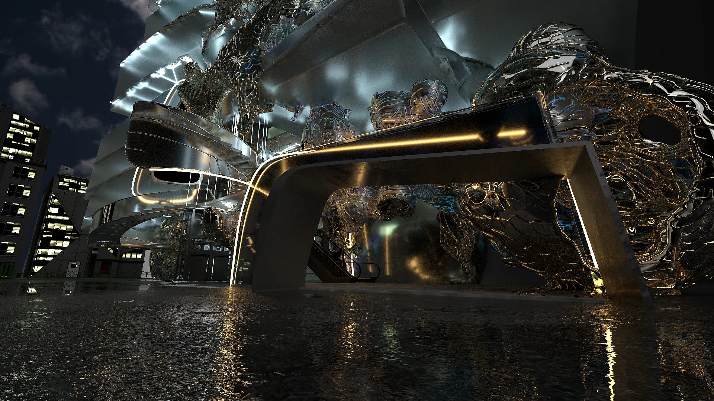
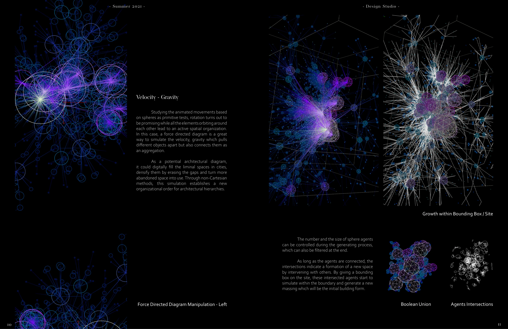
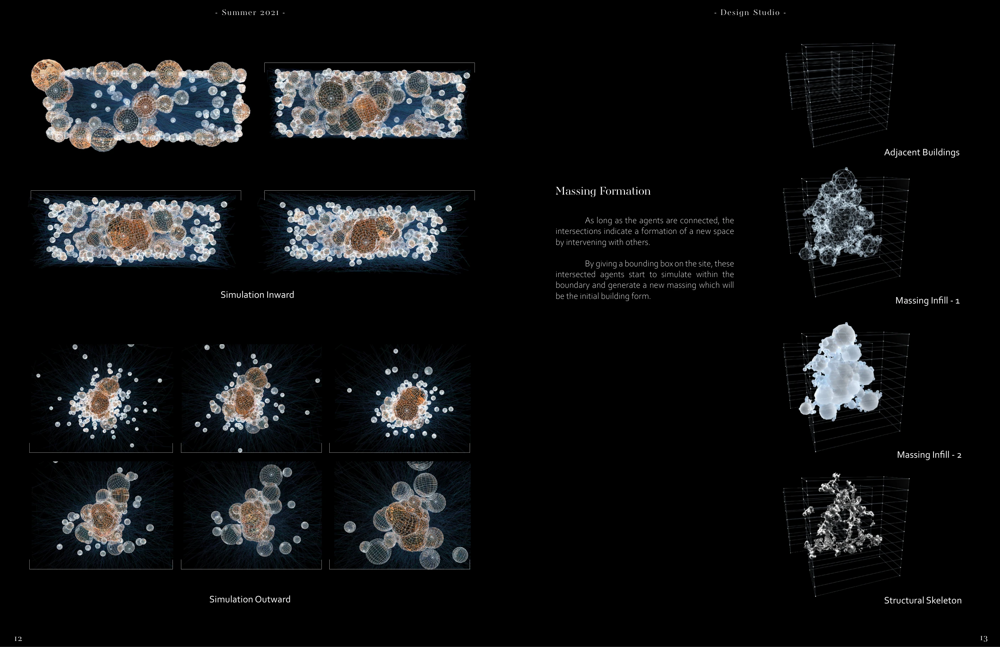
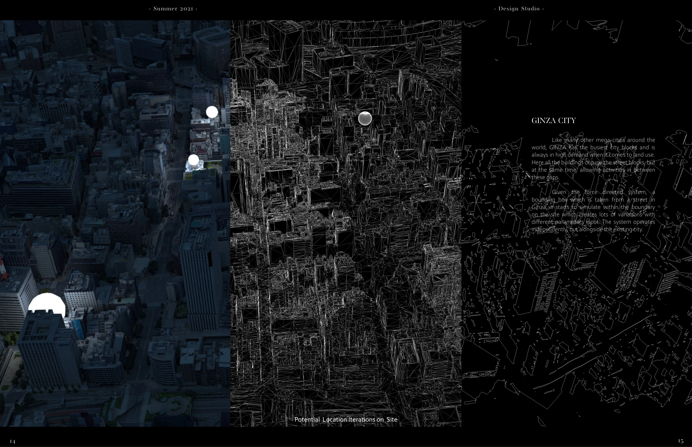
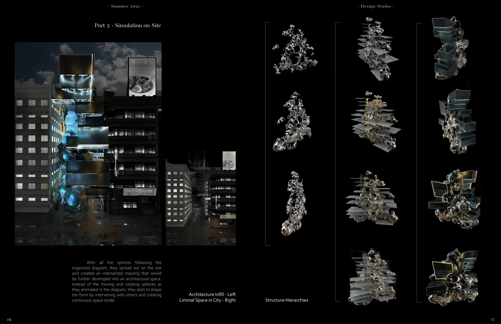
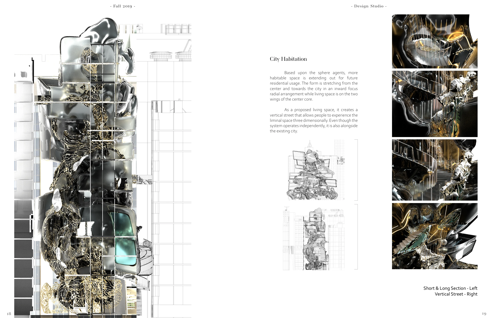
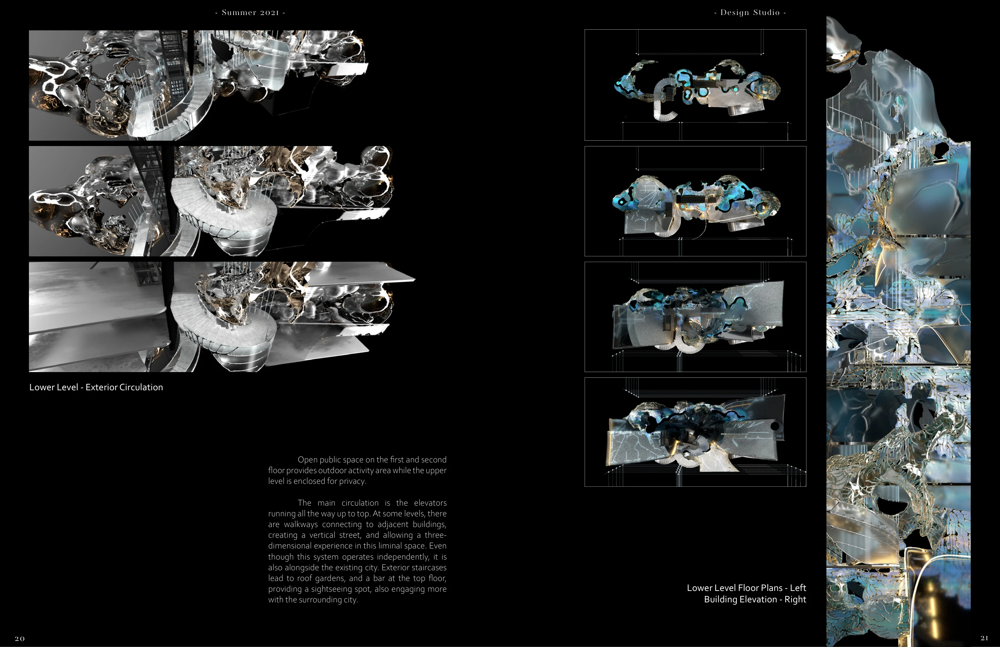
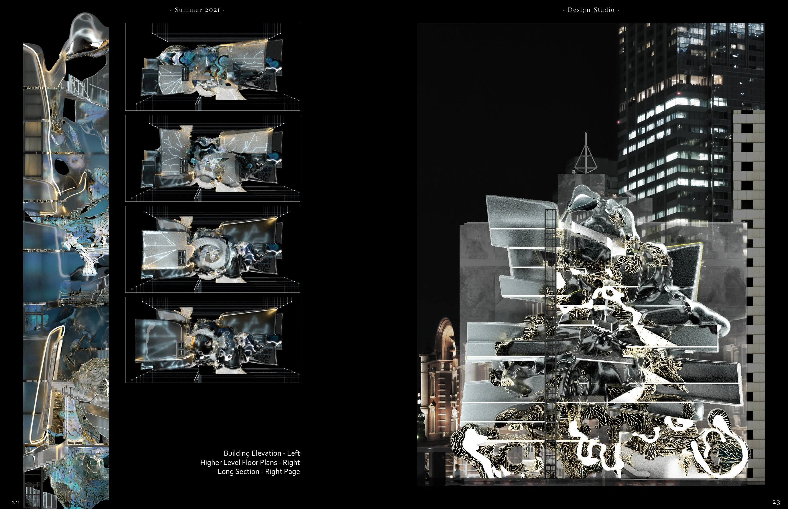
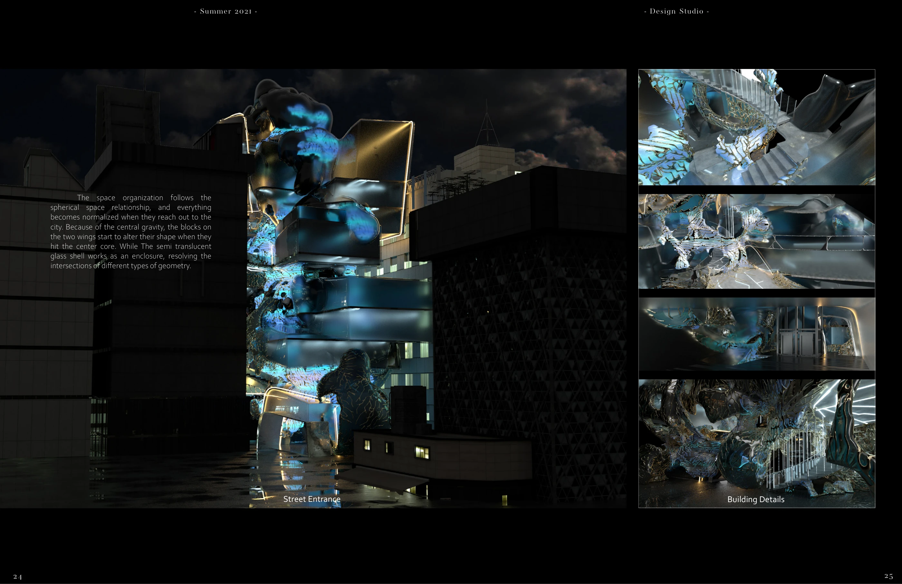
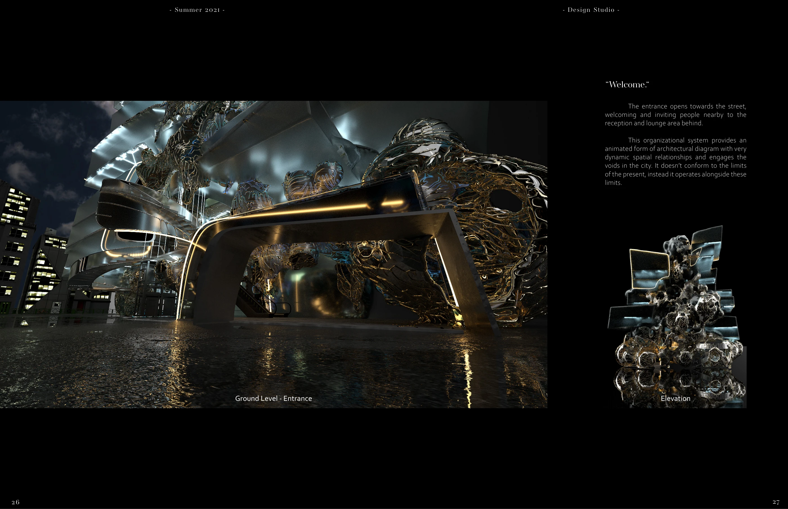

Gravity Infill
Using simulated attraction and motion to generate architecture within the overlooked gaps of an existing city.
Individual thesis · SCI-Arc, 2021 · Instructor: M. Casey Rehm · Cultural agent: Marrikka Trotte
Houdini · Rhino · Cinema 4D

Designing with forces
Sphere agents orbit, attract, and intersect. Their changing relationships become a spatial diagram, replacing a fixed starting geometry with a system of interactions.



The city sets the boundary
Within a site boundary, intersecting agents form a continuous mass. The simulation is developed into an architectural structure that occupies the spaces between existing buildings.



A vertical street
Sections and plans develop the proposal beyond its silhouette. Public space, elevated connections, circulation, and residential areas create a three-dimensional extension of the street.



From system to inhabitation
The final views bring the study back to the scale of an entrance, a room, and the surrounding city.



A film excerpt.
A selected sequence from the project.